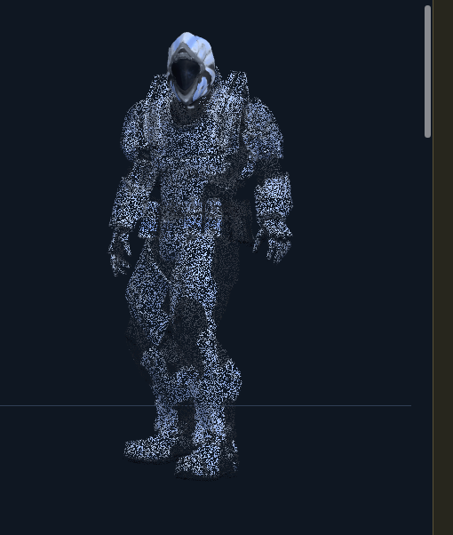
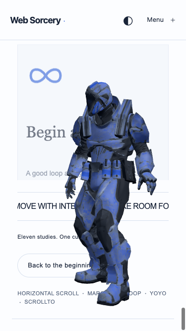
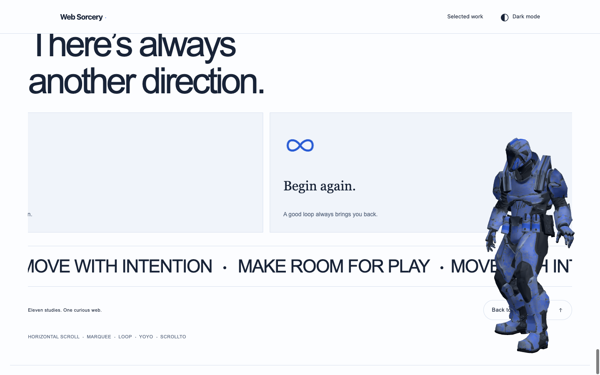
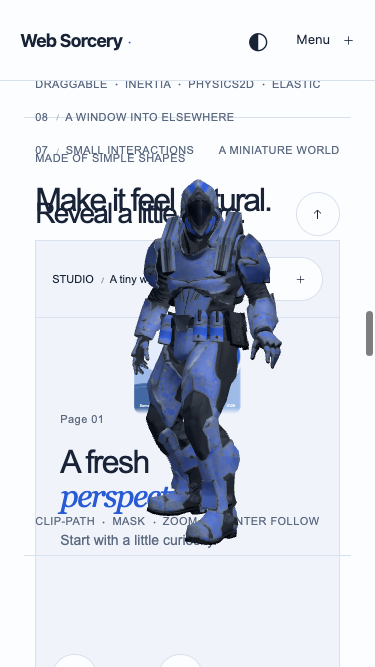

Format all code related to the Soldier animation.
Formatting now covers the Python helper, all embedded browser JavaScript and shader code, related page integration, JSON and Markdown, as well as the animation modules/CSS/HTML. Behavior and binary assets are preserved.
Now format the code so it should be well readable
Maintenance update: animation source, CSS, HTML and browser verification JavaScript were formatted with the scoped Prettier configuration. Runtime behavior is unchanged.
I found a bug with model rendering. When model is close to the bottom of the page, the body is blured and disappears. Only body, not head. Check the image [Image #1]
The supplied image showed stochastic alpha-hash pixels in the body while the head remained opaque. The earlier scroll-driven head-region dissolve caused this behavior. Its alpha mask and alpha hashing are removed, and the whole model remains solid and framed throughout scrolling.
{
"model": {
"type": "glb",
"bytes": 2160468,
"meshes": 2,
"images": 2,
"animations": [
{
"name": "Idle",
"duration_s": 1.9666666666666694
},
{
"name": "Run",
"duration_s": 0.7
},
{
"name": "TPose",
"duration_s": 0.03333333333333333
},
{
"name": "Walk",
"duration_s": 1.0333333333333332
}
]
},
"referenceScreenshot": {
"file": "assets/pasted-image-.png",
"type": "PNG image",
"bytes": 130633,
"width": 510,
"height": 602,
"usage": "Diagnose the prior alpha-hash body dissolve",
"inspection": "inspect_inputs.py ran but Pillow is unavailable; file metadata and the supplied image were inspected manually."
},
"materials": [
"VanguardBodyMat",
"Vanguard_VisorMat"
],
"diagnosis": "Scroll-driven alpha multiplication plus alphaHash discarded body fragments; visor/head were retained."
}
The screenshot is preserved with its original filename. The inspector ran but Pillow was unavailable; PNG dimensions/type were checked with the file command and the supplied image was inspected visually. Model, original atlas and normal-map data are unchanged.
## Rendering bug fix The supplied screenshot showed the earlier alpha-hash dissolve: body fragments were discarded using a scroll-driven Head-bone mask, while the visor stayed visible. That was the cause of the speckled appearance and disappearing body. The mask attribute, shader alpha multiplication, alpha hashing and scroll opacity controller are removed. Both original opaque materials explicitly retain opacity 1, transparent false and depthWrite true. The site's color remapping and original normal map still provide surface detail. Full-body fitting is retained at the bottom instead of transitioning to a hidden-body portrait. The reference screenshot is preserved at assets/pasted-image-.png.
Both materials explicitly use opacity 1, transparent false, alphaHash false and depthWrite true. The fragment shader still maps RGB atlas values into the site palette but no longer changes alpha. A new shader cache key prevents reusing the previous fade program.
The scroll controller no longer computes body fade weights, creates head-mask attributes, filters hit tests through that mask or switches framing into head-only bounds. Full-body fitting stays active at the bottom. The responsive ending frame reserves up to 600 CSS pixels / 80% viewport height, preserving solid visible limbs without viewport clipping. Scroll/path mapping, scale, head tracking, the leftward final head turn and model-only interaction remain.
float soldierShade = pow(
clamp(soldierLuma * uSoldierExposure, 0.0, 1.0),
uSoldierContrast
);
// Red markings become the site's blue accent; tan armor remains steel/slate.
float soldierRed = diffuseColor.r - diffuseColor.g
- max(0.0, diffuseColor.g - diffuseColor.b) * 0.85;
float soldierMark = smoothstep(0.05, 0.12, soldierRed);
vec3 soldierArmor = mix(
uSoldierShadow,
uSoldierArmor,
smoothstep(0.0, 0.6, soldierShade)
);
soldierArmor = mix(
soldierArmor,
uSoldierHighlight,
smoothstep(0.6, 1.0, soldierShade) * 0.6
);
def natural(p):
return [int(t) if t.isdigit() else t.lower() for t in re.split(r"(\d+)", p.name)]
def motion(frames, fps):
"""Centroid of changed pixels between consecutive frames -> normalised path (0..1)."""
import numpy as np
path, prev = [], None
for i, im in enumerate(frames):
a = np.asarray(
im.convert("L").resize((160, max(1, round(160 * im.height / im.width)))), dtype=np.int16
)
if prev is not None:
ys, xs = np.nonzero(np.abs(a - prev) > 25)
if len(xs):
path.append(
{
"t": round(i / fps, 3),
"x": round(xs.mean() / a.shape[1], 3),
"y": round(ys.mean() / a.shape[0], 3),
"area": round(len(xs) / a.size, 4),
}
)
prev = a
return path[:: max(1, len(path) // 24)] # keep at most ~24 samples
async function mountFixture(custom = false, existing = false) {
await evaluate(`
(async () => {
window.originalStage = document.querySelector('.soldier-stage');
originalStage.remove();
window.T = await import('https://cdn.jsdelivr.net/npm/three@0.187.0/build/three.module.js');
const { GLTFLoader } = await import(
'https://cdn.jsdelivr.net/npm/three@0.187.0/examples/jsm/loaders/GLTFLoader.js'
);
const load = GLTFLoader.prototype.load,
projection = T.PerspectiveCamera.prototype.updateProjectionMatrix;
GLTFLoader.prototype.load = function (url, onLoad, ...args) {
return load.call(
this,
url,
(gltf) => {
window.testModel = gltf.scene;
onLoad(gltf);
},
...args,
);
};
T.PerspectiveCamera.prototype.updateProjectionMatrix = function () {
window.testCamera = this;
return projection.call(this);
};
## Run
From the repository root:
```sh
python3 -m http.server 8080
```
Open http://localhost:8080/gsap-animations.html or http://localhost:8080/animations/soldier-3D/index.html. Use HTTP for GLB loading.
Existing Vite workflow:
```sh
npm run dev
npm run build
```
The repository's normal build publishes generated output at the root. Verification builds use /tmp/soldier-build-check with the publishing plugin disabled to avoid unrelated generated changes.
## Customise
CONFIG is exported by soldier.js. soldier.css defines the full-page overlay and model focus outline.
| CONFIG key | Default | Effect |
| --- | --- | --- |
| modelUrl | ./Soldier.glb, relative to module | Model source |
| clipName | Idle | Embedded clip to play |
| speed | 1 | Playback multiplier |
| fieldOfView | 45 | Camera vertical field of view |
| rotation | Math.PI | Initial model heading |
| pixelRatio | 2 | Rendering density cap |
| lightIntensity | 3 | Key/fill brightness |
| armorShadow | #101722 | Deep navy shadow/visor color |
| themeTokens | armor: --color-muted; highlight: --color-art-glow; accent: --color-accent | Host CSS palette bindings |
| themeFallbacks | See CONFIG | Matching light/dark colors for embeds without site tokens |
| textureExposure / textureContrast | 2 / 0.8 | Atlas value remapping; retain wear and plate detail |
| armorRoughness / armorMetalness | 0.7 / 0.2 | Restrained armor sheen |
| visorRoughness / visorMetalness | 0.3 / 0.3 | Visor surface response |
| visorMaterial | Vanguard_VisorMat | Original visor material selector |
| scrollContainer | null | Document scrolling element; pass an HTMLElement for a specific scroller |
| scrollPathSamples | 2048 | Arc-length lookup resolution for the path |
| scrollInset | 24 | Visible geometry inset inside the viewport edges |
| endScale | 4.5 | Uniform model scale at the bottom |
| endTurnStart | 0.7 | Progress where the final leftward head turn begins |
| endHeadYaw | -Math.PI / 3 | Final leftward head turn, radians |
| jumpHeight | 0.2 | Peak jump displacement relative to model height |
| jumpDuration | 0.8 | Jump duration in seconds |
| headBone / neckBone | mixamorig:Head / mixamorig:Neck | Original joints used for tracking |
| headYawLimit | Math.PI / 5 | Maximum horizontal turn, 36 degrees |
| headPitchUp / headPitchDown | 0.25 / 0.32 | Vertical tilt limits, in radians |
| headResponse | 8 | Tracking and neutral-return smoothing rate |
| headPointerRange | 0.8 | Cursor travel relative to canvas dimensions before the angle limit |
| neckShare | 0.25 | Fraction of the turn shared by the neck |
| label | See CONFIG | Accessible canvas name and interaction help |
| loadingText / errorText / webglText | See CONFIG | Loading and fallback messages |
| initialModelHeight / initialViewportFraction | 360 / 0.55 | Initial full-body CSS height and viewport cap |
| endFrameHeight / endFrameViewportFraction | 600 / 0.8 | Reserved final full-body frame and viewport cap |
| endFrameAspect | 0.5 | Reserved full-body frame width/height ratio |
| boundsPadding | 0.035 | Conservative fitting padding relative to model height |
| jumpLabel | Jump soldier | Model-sized keyboard action label |
## Embed
Include soldier.css and the import map from index.html. soldier.js automatically mounts the existing #webgl-soldier canvas. For manual mounting, use another ID:
```js
import { mountAnimation } from './animations/soldier-3D/soldier.js';
const animation = mountAnimation(document.querySelector('#my-soldier'), {
scrollContainer: null,
});
animation.pause();
animation.play();
animation.destroy();
```
Do not mount twice on the same canvas. A supplied .soldier-stage wrapper is reused; otherwise a controller-owned wrapper is created. The stage is placed under body while mounted; legacy inline width/height/transform values are overridden. Original stage/canvas attributes and position are restored on destroy. Generated overlays are removed. The canvas is cleared before disposal.
Pass an HTMLElement as scrollContainer for a specific scroller. It uses that element's scrollTop and scrollHeight − clientHeight. The overlay still covers the viewport.
Expanded formatting checks: Prettier and Black checks passed; runtime JavaScript and embedded browser programs have equivalent ASTs, GLSL token streams match, and the Python AST is unchanged. The Python inspector was rerun on Soldier.glb. Production build and the newly formatted browser script passed. Shader whitespace changes can change bundle bytes without changing shader behavior.
## Verification The browser script checks full-page canvas dimensions and body placement at 375×667, 768×1024 and 1440×900. It asserts that every body/visor material stays opaque with alpha hashing disabled, then projects every skinned vertex at nine forward/reverse scroll positions to verify the complete model remains in frame. Tests also cover jump visibility, a custom scroller, content-height changes, live resize, background click-through, model-only hover/click/keyboard activation, preventing link clicks behind the model, gaze directions/neutral return/final turn, palette uniforms, normal/atlas preservation, reduced motion and restoring a host-owned stage on destroy. Production build, JavaScript syntax and whitespace checks passed. A short playback sample checks draw calls and long tasks. See checks/results.json and the viewport screenshots. Physical devices, other browser engines and exhaustive GPU leak profiling were not checked. Geometry samples use a frozen Idle baseline plus an active jump sample; conservative padding accommodates normal Idle motion. With the HTTP server running and Chrome listening on DevTools port 9223: ```sh node animations/soldier-3D/tools/verify.mjs ``` The script uses Node 22's native WebSocket.
{
"checks": [
{
"name": "mobile full-page canvas, opaque full body and unclipped geometry throughout scroll",
"passed": true
},
{
"name": "tablet full-page canvas, opaque full body and unclipped geometry throughout scroll",
"passed": true
},
{
"name": "desktop full-page canvas, opaque full body and unclipped geometry throughout scroll",
"passed": true
},
{
"name": "custom scroll range, content-height changes and live resize",
"passed": true
},
{
"name": "background clicks pass through, mesh hover/click/keyboard jump work, and clicks on the model do not activate links behind it",
"passed": true
},
{
"name": "head tracking, neutral return and final leftward head turn",
"passed": true
},
{
"name": "theme palette and original atlas/normal preservation",
"passed": true
},
{
"name": "host stage, canvas attributes and placement restored on destroy",
"passed": true
}
],
"opacityAssertions": "Every body/visor material has alphaHash=false, transparent=false, opacity=1; every vertex is included at all nine forward/reverse scroll samples.",
"errors": [],
"warnings": [],
"performance": {
"drawCallsOver2Seconds": 242,
"longTasks": []
}
}




## Assumptions - “Full page” is a fixed viewport-sized overlay spanning the page throughout scrolling, rather than a document-height drawing buffer. - Runtime placement is directly under body so portfolio overflow or transformed ancestors cannot crop the canvas. A pre-existing .soldier-stage is reused and restored on destroy. - The initial model height is capped at 360 CSS pixels and 55% of viewport height. Actual rig scale still grows from 1 to 4.5; camera fitting can pull back to preserve visibility. - The model stays fully opaque inside a 24-pixel viewport inset at every scroll position. Full-body fitting remains active through the end; the head still turns 60 degrees left. - Scroll coordinates remain linear across the document's or supplied element's scroll range. Viewport fitting is a separate rendering operation. - The stage and canvas never intercept pointer events. Visible mesh hits trigger hover/tap/click interaction and prevent activating underlying links. Empty page space keeps native clicks and scrolling. - A transparent model-sized keyboard action provides Enter/Space jumping and a visible focus outline, without a control toolbar or full-page focus target. - Cursor gaze remains decorative across the page. Reduced motion retains a centered, full-body still pose with no zoom, jumping or continuous rendering. - Embedded materials keep their original maps and use the site palette at runtime. Both materials have opacity 1, transparent false and alphaHash false. No scroll shader changes alpha.
The latest bug report takes precedence over the former hidden-body/head-only ending: the body stays solid throughout the scroll, including at the bottom. The final head turn remains. Reference image palette extraction did not run because Pillow was unavailable; manual PNG metadata and visual inspection were used. Physical devices and other browser engines were not tested.